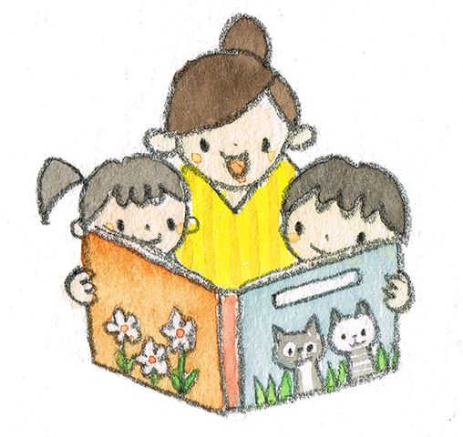
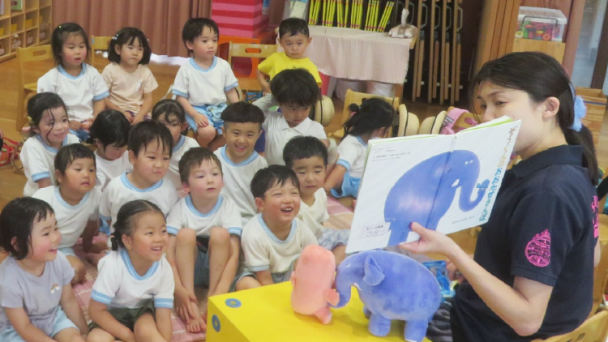
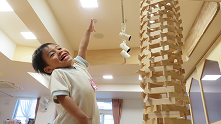
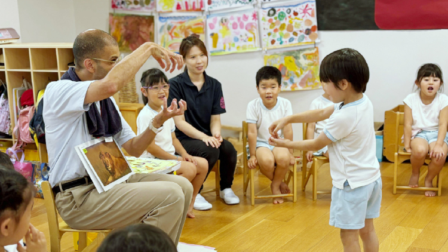
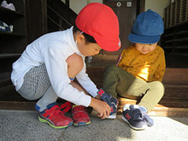
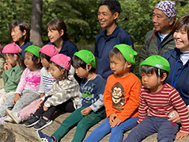

考える力・人と関わる力を育てます


絵本の時間
たくさん遊んで帰る前には、毎日落ち着いた絵本の時間を過ごします。
いっぱい体を動かし発散しているからこそ、絵本の時間には集中してお話を聞くことができます。絵本の世界は子どもたちの心を豊かにし、創造力を育みます。
大好きな先生とお友達と一緒に絵本の世界でたくさん遊び、言葉と思考の力をのばします。

木のおもちゃ
木のおもちゃの手触りや匂いが子ども達の心を暖かく包み豊かにします。
子ども達にとって本当によいおもちゃは何かを常に考慮し環境を整えています。
友達と力を合わせる事で、人の意見を聞く、自分の意見をいう、そうやって人との調和を取っていけるようになります。
友達と一緒に出来た時の達成感とそれを作るまでの過程が成長につながります。

ECC
子どもたちが羽ばたく世界の人たちと、幼いときから自然に寄り添えるように、英語の歌・お話・絵本などを通して遊ぶ時間を持っています。
世界共通のスマイルで、ハグで、世界のご挨拶!!

世界の文化
世界には楽しい文化がいっぱい。 言葉や暮らし、季節の行事など、“本物との出会い”を通して子どもたちがワクワクする体験を大切にしています。

リズム遊び
裸足になってピアノの音に合わせて全身を動かすリズムあそびは、子どもたちの体幹・リズム感・表現力を豊かに育てます。 音を感じて自由に動くことで、心も身体ものびのびと解放される時間です。

コンテンポラリーダンス
子どもたちが自分の身体との付き合い方を習得し、人とのつながり、コミュニケーションを大切にしながらからだの感覚を育て、自分らしく表現することを楽しみます。